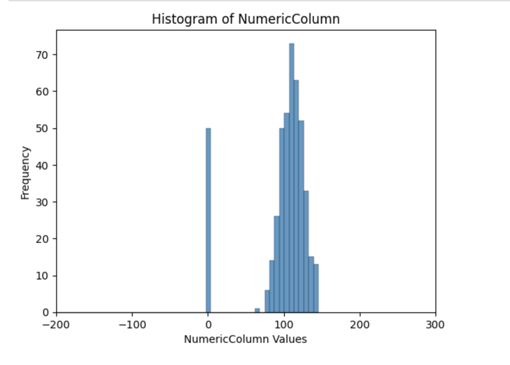
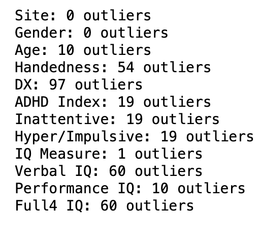

Data cleaning, also known as data cleansing, is a crucial step in the data preparation process. It involves identifying and correcting (or removing) errors and inconsistencies in data to improve its quality and accuracy.
Data cleaning steps taken
Removing spaces
- Removing spaces from column names simplifies the process of writing code, as it avoids the need for additional syntax (like quotes or brackets) to handle the spaces.
df1.columns = df1.columns.str.strip()
Data Transformation
- Converting data from one format or structure into another. This can be part of cleaning if the current format of the data impedes analysis.
- Its important to make sure all the column are the correct datatype and the the values with incorrect datatypes are replaced with NaN
- The below image has all correct datatypes after transforming to correct ones. If any values are in a column with incorrect datatype are converted to nan after transformation.
Check for duplicate rows
- Duplicate records consume unnecessary storage and processing resources. Removing them can make data storage more efficient and speed up data processing tasks.In machine learning and statistical modeling, duplicate data points can lead to biased or overfitted models because the model might overemphasize the repeated information.
Handling Missing Data
- The mode is most suitable for categorical data (like gender, color, type of product). It represents the most frequent category within a column.
- Mean is suitable if the variable should ideally follow a normal distribution or be close to it and there are no many outliers.Mean is very sensitive to outliers. If the data is heavily skewed or has significant outliers, the mean might not be the best representation of central tendency, and the median could be a more appropriate choice.
- Mean is suitable if the variable should ideally follow a normal distribution or be close to it and there are no many outliers.Mean is very sensitive to outliers. If the data is heavily skewed or has significant outliers, the mean might not be the best representation of central tendency, and the median could be a more appropriate choice.
- The missing values in Verbal IQ is replaced with mean as it follows a normal distribution as below 
Remove columns
- Removing the ScanDir ID column: ID columns are generally arbitrary and do not contain information relevant to the target variable or outcome.
- Full-2 IQ is removed as it has a lot of missing values.
- The columns removed are Secondary Dx, Full2 IQ, ScanDir ID, ADHD Measure as there are many missing values
Handling Outliers
- The number of outliers in each column 
- We saw that the outliers present in the dataset has all erroneous values which are not necessary for our model building. Therefore, removed the rows with the outliers.

Normalisation
- This process standardizes the values in a dataset to ensure they're on a consistent scale. This is particularly important when comparing data from different sources.
Results
Link to Data Cleaning code of record data in Python
Link to Data Cleaning code of records data in R
Record Data before cleaning
Record Data after cleaning
Data cleaning code of text data
Link to Data Cleaning code of records data in R
Record Data before cleaning
Record Data after cleaning
Data cleaning code of text data
Conclusion
Data cleaning is a significant step in data analysis and machine learning projects, as the quality of the insights drawn from data is heavily dependent on the quality of the data itself. It's a time-consuming process but essential for accurate, reliable outcomes in data-driven projects.